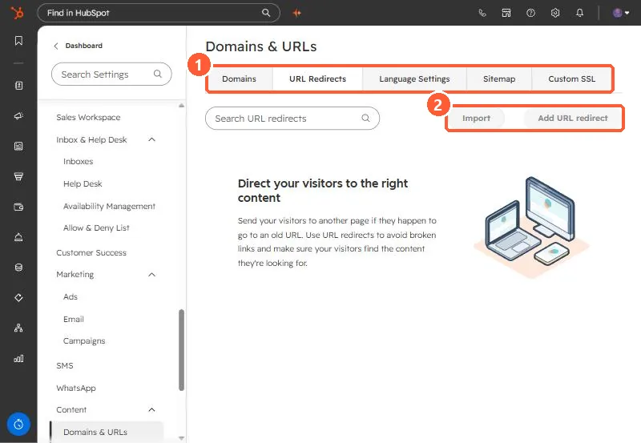

Short answer
In Settings, Domains & URLs, URL Redirects, click Add URL redirect. A standard redirect sends one URL to another. A flexible redirect uses a pattern to rewrite many URLs at once. Import uploads redirects from a CSV. HubSpot also creates system redirects when you change the URL of a published page or post. File URLs cannot be redirected.
1. The URL Redirects tab
Open URL Redirects. My demo has none yet.


2. Standard, flexible, and import
- Standard: one URL to another. For an external destination, include
https://. - Flexible: rewrites URLs by structure. HubSpot does not recommend mapping URLs that contain a period.
- Import: upload a CSV. You can overwrite existing redirects with the same original URL, and failed rows are sent to your notifications as an error list.
- System redirects: created automatically when a published page's URL changes.
3. Advanced options
Under More options you can add a note explaining why the redirect exists. Use it, so the next person knows what is safe to delete. For connecting the domain first, see connect a custom domain.